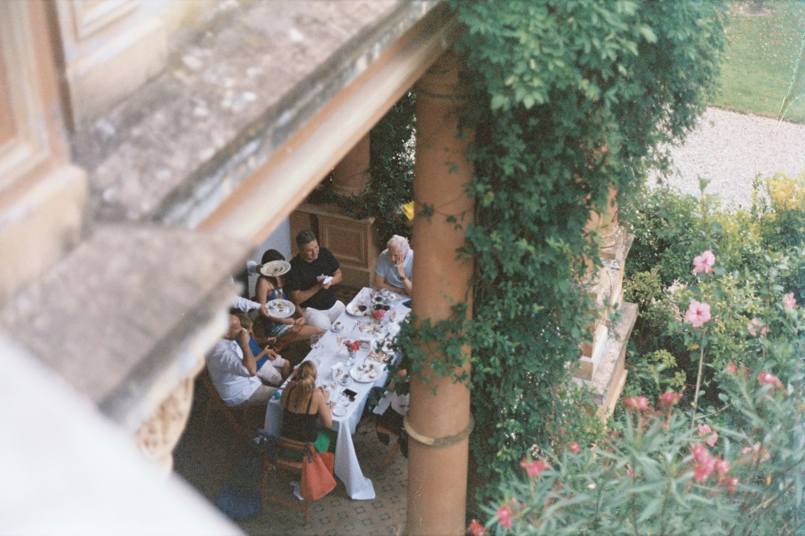
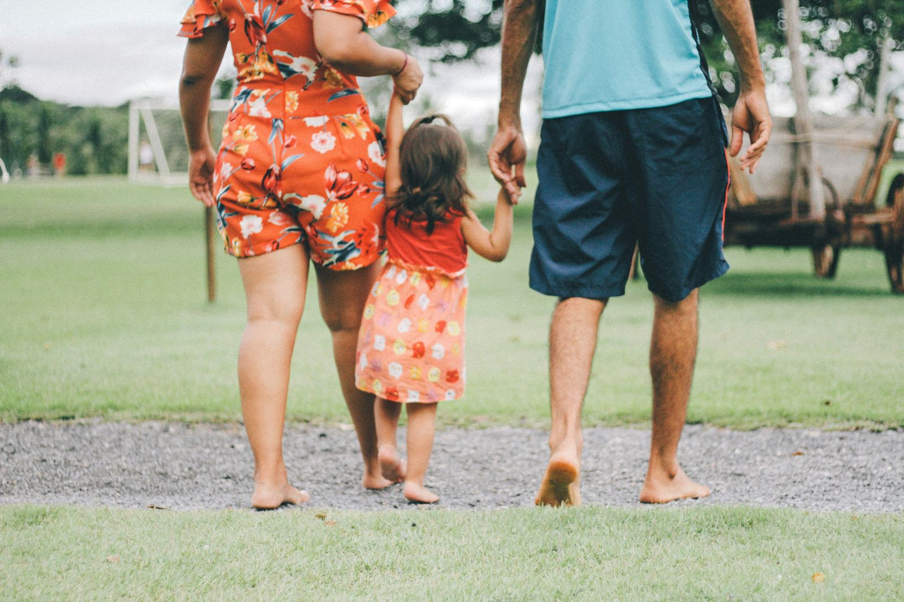

Discover the evolution of the Italian family over the past 30 years! From tradition to modernity, explore the changes in family dynamics, work-life balance, technology, and environmental awareness.
Scopri l'evoluzione della famiglia italiana negli ultimi 30 anni! Dalla tradizione alla modernità, esplora i cambiamenti nella dinamica familiare, nell'equilibrio tra lavoro e vita privata, nella tecnologia e nella consapevolezza ambientale.
Negli ultimi decenni, la famiglia italiana ha subito una trasformazione sorprendente, mantenendo radici tradizionali ma aprendosi a nuove idee e stili di vita. Secondo una ricerca, la maggioranza delle famiglie italiane si sente più felice e serena rispetto a 30 anni fa, grazie anche a una maggiore stabilità economica.
Le famiglie di oggi godono di relazioni più semplici e trascorrono del tempo prezioso insieme, come chiacchierare, guardare film o uscire a cena. Il rapporto tra genitori e figli è cambiato, con una maggiore attenzione alla sicurezza e al benessere dei più piccoli.

Anche il mondo del lavoro si è evoluto, con più donne che emergono come imprenditrici e manager. Tuttavia, persistono disuguaglianze di genere con molte donne che lavorano meno ore e guadagnano meno dei loro partner.
La tecnologia ha rivoluzionato la vita familiare, con l'uso diffuso di internet e dei social media. Le famiglie possiedono numerosi dispositivi tecnologici e condividono spesso l'uso di smartphone e tablet.
C'è anche una crescente attenzione verso la sostenibilità ambientale e economica, con molte famiglie che adottano pratiche di riciclaggio e cercano prodotti rispettosi dell'ambiente.
Tuttavia, non tutto è rose e fiori. Le famiglie italiane si preoccupano per il futuro, soprattutto per la sicurezza finanziaria e la salute. La maggior parte possiede polizze assicurative per proteggere se stessi e i propri cari.

In questo articolo abbiamo esplorato i cambiamenti nelle famiglie italiane negli ultimi 30 anni, evidenziando le sfide e le preoccupazioni affrontate. Dalla stabilità economica alla protezione digitale, le famiglie si sono adattate e hanno cercato soluzioni.
fonte: la famiglia italiana di oggi tra tradizione e nuove aperture.
Parole chiave
| Famiglia | Un gruppo di persone collegate da parentela |
| Felice | Sentirsi contenti e soddisfatti |
| Tradizionale | Seguire le usanze e le pratiche del passato |
| Moderno | Relativo a tempi recenti; attuale |
| Aperto | Accettante, disposto ad accogliere nuove idee |
| Ambiente | La natura circostante o l'insieme degli elementi fisici e sociali che influenzano la vita delle persone |
| Legame | Connessione o rapporto forte tra persone |
| Rischio | Possibilità di un evento negativo o pericoloso |
| Preoccupato | Sentirsi ansiosi o turbati per qualcosa |
| Lavoro | Attività svolta per guadagnare denaro o soddisfare un bisogno |
| Sicurezza | Sensazione di essere protetti o al sicuro |
| Economia | L'amministrazione delle risorse finanziarie |
| Felicità | Stato di gioia e soddisfazione |
| Relazione | Connessione o rapporto tra persone o cose |
| Genitore | Un adulto che ha un figlio |
| Figlio | Il bambino di una coppia |
| Timore | Sentimento di paura o apprensione |
| Stima | Sentimento di ammirazione o rispetto |
| Affetto | Sentimento di amore o simpatia |
| Amico | Una persona con cui si ha un legame di amicizia |
| Anziano | Una persona di età avanzata |
| Donna | Una persona di sesso femminile |
| Uomo | Una persona di sesso maschile |
| Tecnologia | L'uso di conoscenze scientifiche e tecniche per scopi pratici |
| Privacy | Il diritto di mantenere le proprie informazioni personali al sicuro da accessi non autorizzati |
| Sostenibilità | La capacità di continuare a sostenere o mantenere qualcosa a lungo termine |
| Risparmio | L'atto di mettere da parte denaro o risorse per l'uso futuro |
| Paure | Emozioni negative o ansie riguardo a situazioni future potenzialmente pericolose o dannose |
| Protezione | Azione di proteggere qualcuno o qualcosa da danni o pericoli |
| Assicurazione | Un contratto in cui una compagnia di assicurazioni garantisce indennità o compensazioni specifiche in caso di perdite, danni, malattie o morte in cambio di pagamenti periodici |
| Acquisto | L'atto di acquistare beni o servizi |
| Promozione | Azione di promuovere o pubblicizzare qualcosa |
| Consiglio | Suggerimento o parere dato a qualcuno |
| Viaggio | Un'escursione o un percorso da un luogo all'altro |
| Affitto | Pagamento per l'uso temporaneo di una proprietà o un bene |
| Mutuo | Un accordo per prendere in prestito denaro con un'obbligazione di restituirlo con interesse |
| Bollette | Fattura di pagamento per servizi pubblici o altre spese |
| Riscaldamento | Processo di riscaldamento di un ambiente o di un corpo |
| Condominio | Proprietà immobiliare condivisa da più proprietari |
| Spesa | L'atto di spendere denaro per beni o servizi |
| Casa | Un luogo in cui si vive, abitazione |
Esercizio
Domande
- Quali sono alcuni dei cambiamenti che sono avvenuti nelle famiglie italiane negli ultimi 30 anni, secondo la ricerca menzionata nel testo?
- Qual è l'attività più comune che le famiglie italiane amano fare insieme?
- Cosa mostra la ricerca riguardo al rapporto tra genitori e figli?
- Quali sono le preoccupazioni principali delle famiglie italiane?
- Che ruolo giocano le assicurazioni nelle famiglie italiane secondo il testo?